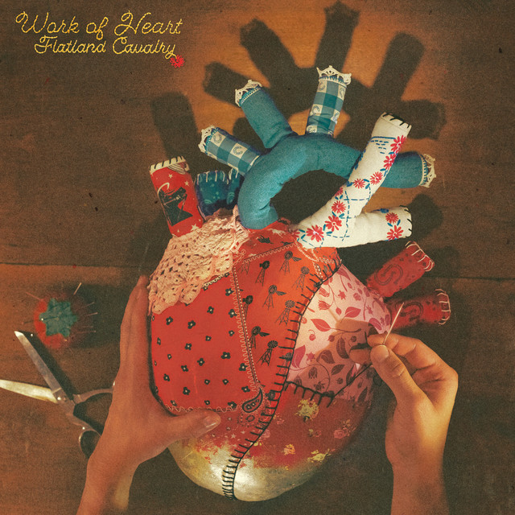

by Flatland Cavalry
Wow. I was blown away by how full and energizing these tracks were. By far one of my favorite reviews today just by the vibes I got from these tracks. Even the songs with more focus on lyrics and message that were simply vocals and guitar seemed to shine a spotlight on anything they wanted to. Even the album art being an anatomically correct heart being sewn together with different, mismatching fabrics plays into the central themes of this project being that relationships need continuous effort being put in to maintain and they cannot just remain stagnant until you need them again. My personal favorite tracks were Long Goodnight, Never Comin' Back, and Gone. Album was reviewed on March 31st, 2026.